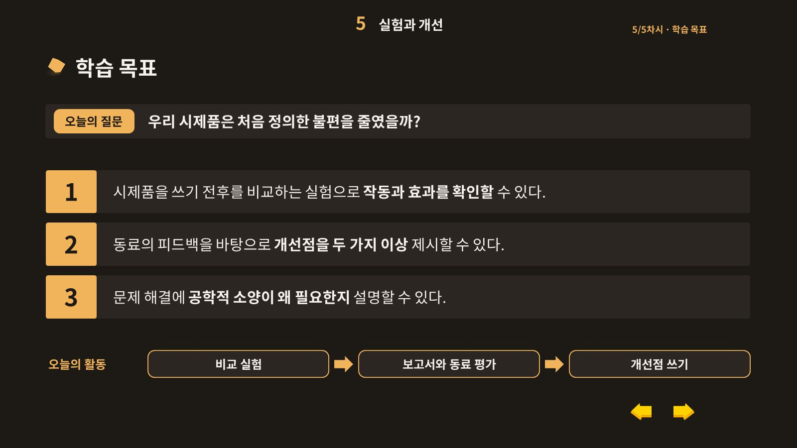
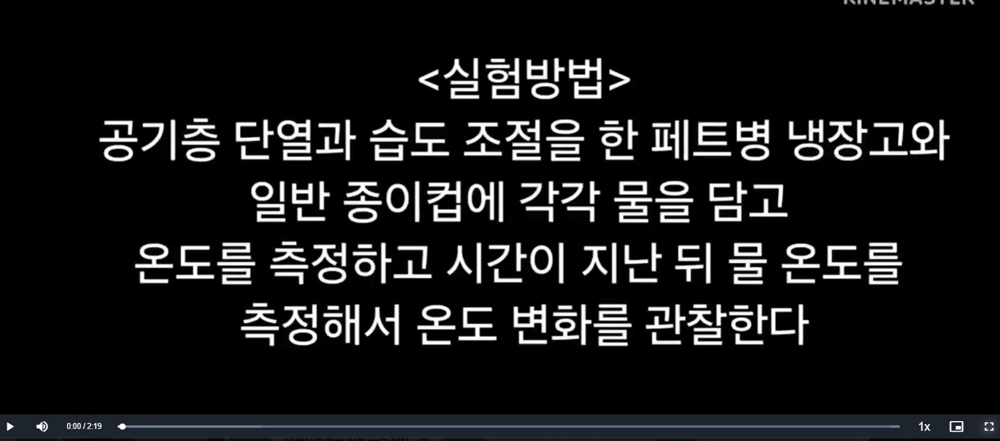
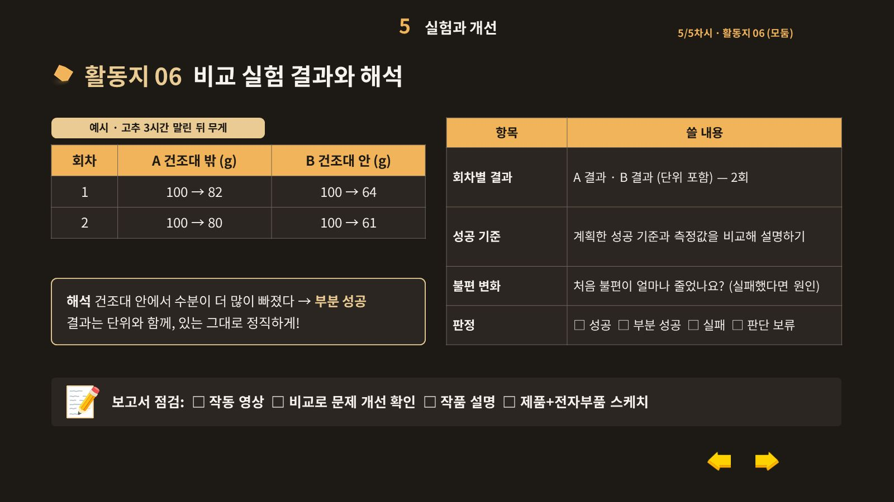
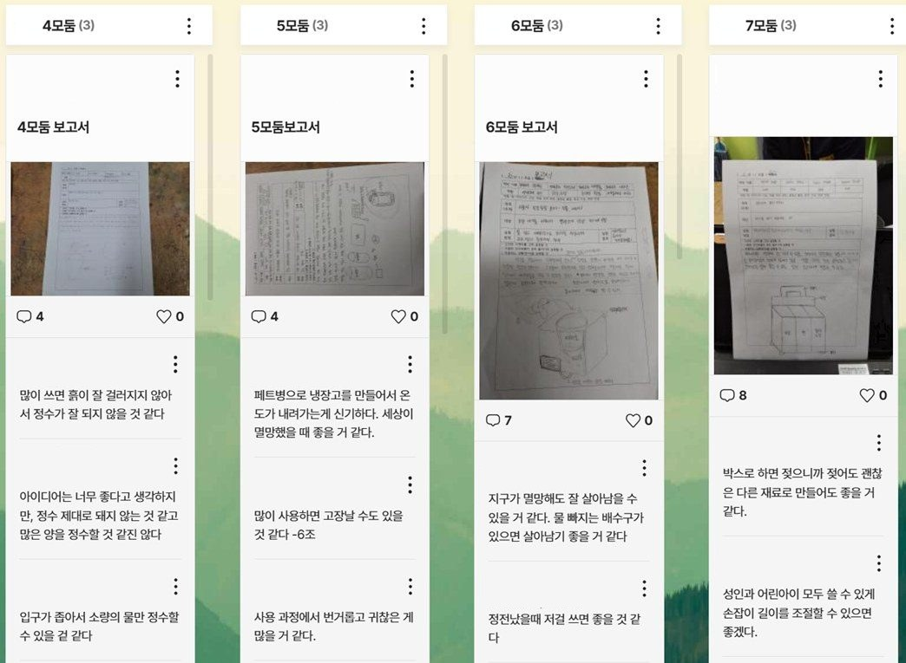
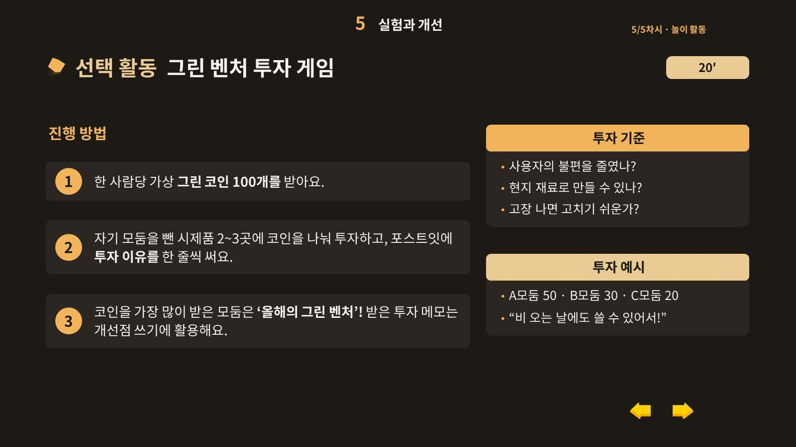
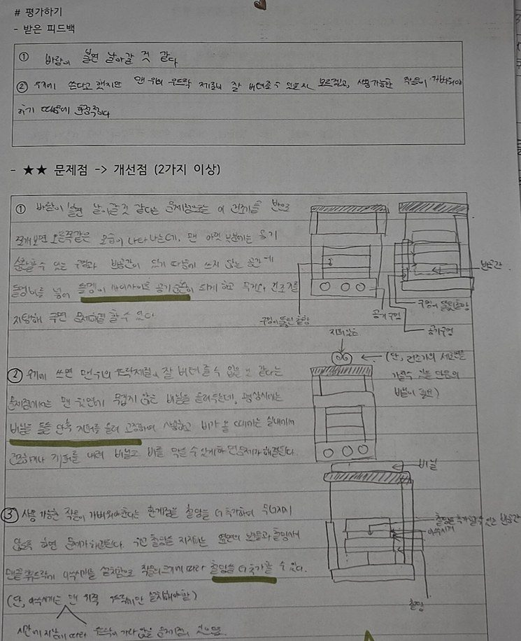
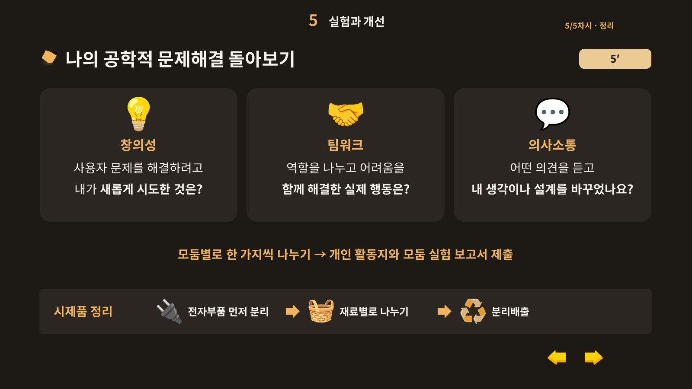

우리 시제품은 처음 정의한 불편을 줄였을까?
오늘의 목표시제품을 쓰기 전후를 비교하는 실험으로 효과를 확인하고, 동료의 피드백을 바탕으로 개선점을 두 가지 이상 제시하며, 문제 해결에 공학적 소양이 왜 필요한지 설명해요.

수업 흐름
← → 키로 단계를 넘겨요. 교사 모드를 켜면 지도안의 발문과 유의점이 함께 보여요.
우리 시제품은 처음 정의한 불편을 줄였을까?
1차시에 정의한 문제 문장을 다시 읽고, 그 불편이 줄었는지 알려면 무엇을 비교해야 할지 이야기해요.
비교 예시: 정수기 사용 전후의 물, 배기구가 있을 때와 없을 때의 화덕

오늘의 목표
- 시제품을 쓰기 전후를 비교하는 실험으로 작동과 효과를 확인할 수 있다.
- 동료의 피드백을 바탕으로 개선점을 두 가지 이상 제시할 수 있다.
- 문제 해결에 공학적 소양이 왜 필요한지 설명할 수 있다.
오늘의 활동: 비교 실험 → 보고서와 동료 평가 → 개선점 쓰기

비교 실험 영상 찍기
- 1차시 문제 문장 다시 읽기
- 조건 하나만 바꾸고 나머지는 같게
- 영상에 자막으로 설명 넣기
- 실패해도 괜찮아요 — 원인을 써요

비교 실험 결과와 해석
| 가상 예시 · 얇게 썬 사과 3시간 뒤 무게 (가상 수치) | A 건조대 밖 (g) | B 건조대 안 (g) |
|---|---|---|
| 1회 | 100 → 82 | 100 → 64 |
| 2회 | 100 → 80 | 100 → 61 |
해석 건조대 안에서 수분이 더 많이 빠졌다 → 부분 성공
결과는 단위와 함께, 있는 그대로 정직하게!
- 성공
- 부분 성공
- 실패
- 판단 보류

띵커벨 동료 평가
- 보고서와 사진·영상을 띵커벨에 올려요.
- 자기 모둠을 뺀 1·2·3등을 고르고 한 줄 코멘트!
- 모둠당 1명씩 다른 모둠 보고서에 댓글 1~2개
좋은 댓글 예: “비 오는 날에는 어떻게 하나요?” — 사용자 입장의 질문
띵커벨 열기
그린 벤처 투자 게임
선택 활동 — 하면 바로 앞 ‘띵커벨 동료 평가’(15분)를 대신해요. 개선점 쓰기 13분은 그대로.
- 한 사람당 가상 그린 코인 100개를 받아요.
- 자기 모둠을 뺀 시제품 2~3곳에 코인을 나눠 투자하고, 포스트잇에 투자 이유를 한 줄씩 써요.
- 코인을 가장 많이 받은 모둠은 ‘올해의 그린 벤처’! 받은 투자 메모는 개선점 쓰기에 활용해요.
투자 예시: A모둠 50 · B모둠 30 · C모둠 20 — “비 오는 날에도 쓸 수 있어서!”

피드백으로 개선점 쓰기
개선안은 2가지 이상, 각자 써요. 모둠원과 같으면 인정되지 않아요!

나의 공학적 문제해결 돌아보기
사용자 문제를 해결하려고 내가 새롭게 시도한 것은?
역할을 나누고 어려움을 함께 해결한 실제 행동은?
어떤 의견을 듣고 내 생각이나 설계를 바꾸었나요?
모둠별로 한 가지씩 나누기 → 개인 활동지와 모둠 실험 보고서 제출 → 시제품은 전자부품 먼저 분리 → 재료별로 나누기 → 분리배출

활동지
활동지 06 · 07 — 결과를 정직하게, 개선은 두 가지 이상
쓴 내용은 이 기기의 브라우저에만 저장돼요. 제출은 종이 활동지와 모둠 실험 보고서로 해요.
활동지 06 · 비교 실험 결과 (모둠)
1회차별 결과
2결과 해석
보고서 점검: 작동 영상 · 비교로 문제 개선 확인 · 작품 설명 · 제품+전자부품 스케치
활동지 07 · 개선점과 돌아보기 (개인)
1받은 피드백
2개선안 ①
3개선안 ②
4창의성
5팀워크
6의사소통
이 차시 슬라이드
나가기 질문
우리 시제품은 처음 정의한 불편을 얼마나 줄였나요? 측정한 값(단위 포함)을 근거로 한 문장으로 써요.